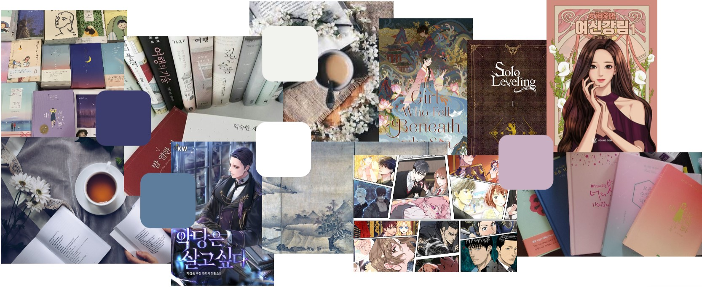
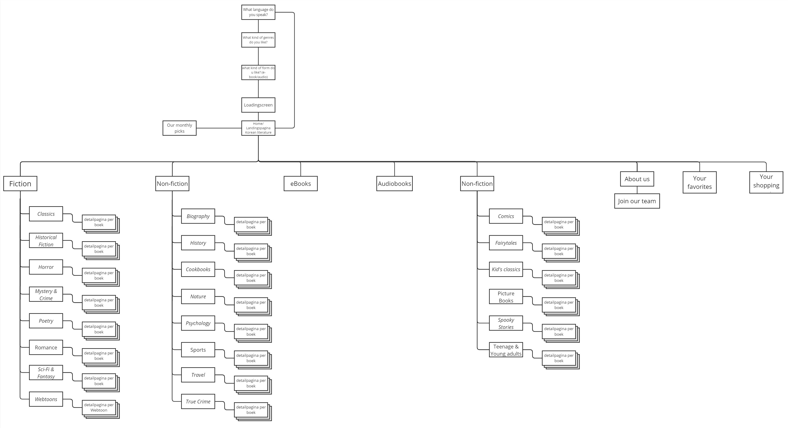
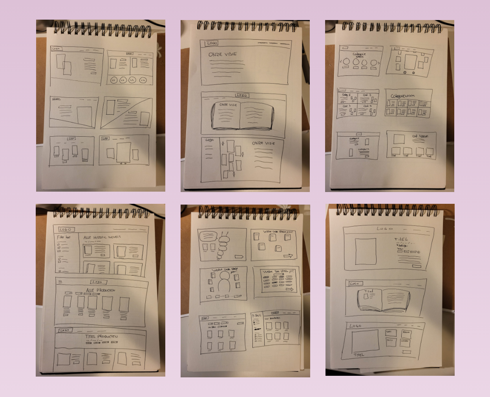
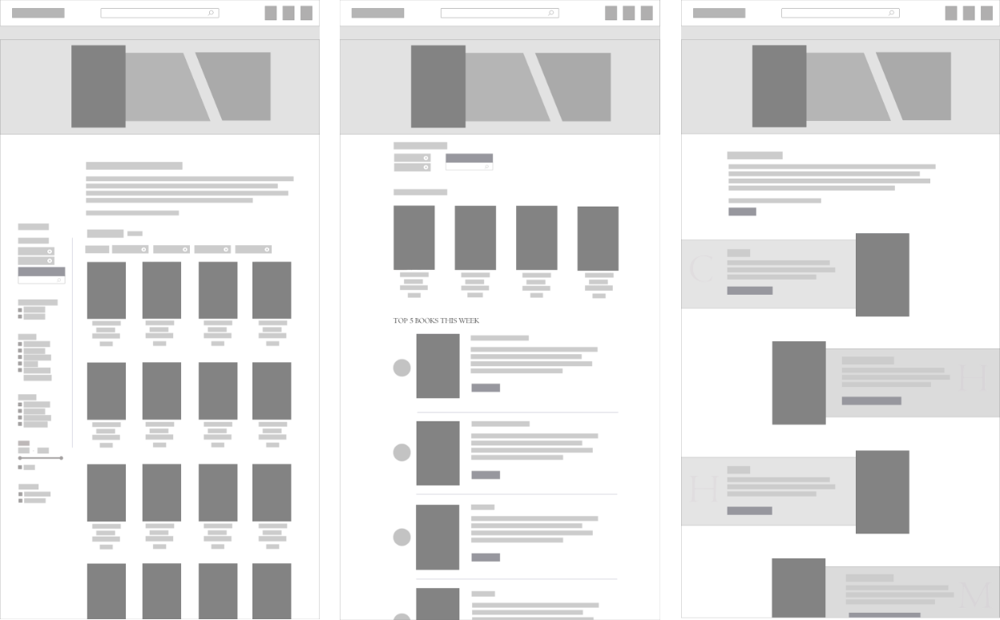

Periode
September/oktober 2023
Skills
- ● Adobe XD
- ● Grid
- ● Kleurtheorie
- ● UX/UI Design
- ● Branding
Opdracht & beschrijving
De opdracht voor het vak Grid & Kleur van de minor Visual Interface Design was om het visuele ontwerp en een digitaal prototype te maken van een laptop/desktop website over producten met een hernieuwde waarde voor de gebruiker. Hierbij breng je je persoonlijke visie op dit thema over. Ik heb binnen deze opdracht ervoor gekozen om verschillende Koreaanse literatuur inclusiever te maken door deze in meerdere talen aan te bieden, waardoor meer mensen kunnen genieten van deze prachtige literatuur. Het prototype is gemaakt in Adobe XD.
Moodboard/visuele stijl
Om de look & feel in één oogopslag te kunnen zien, heb ik een moodboard gemaakt. Hieruit heb ik een kleurenpalet gehaald die ik vervolgens in mijn design heb verwerkt.
Sitemap
Om een duidelijk overzicht te krijgen van alle pagina's van de website, heb ik een sitemap gemaakt.
Wireframes
Lo-fi en me-fi wireframes van een aantal pagina’s van de websites.
 